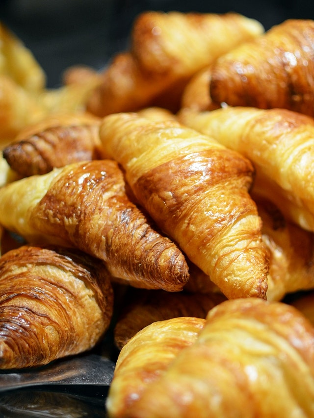
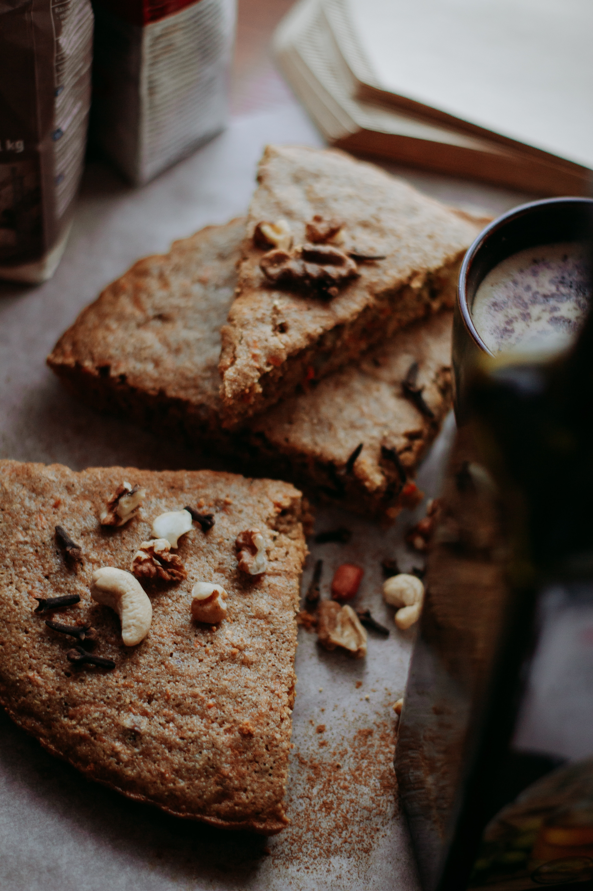

Comidas
Croissant
O tradicional da cultura francesa, nossa receita única foi concebida em Paris, trazida para cá por um de nossos chefes. Ele pode ter diversos recheios e sabores, como chocolate, creme de avelã ou então você pode pedir o tradicional.
Bolo de Nozes
Bolo feito pelos nossos confeiteiros, caseiro, igual receita de mãe! Nossas nozes vêm diretamente do Chile. Produzido com todo o amor para você.
Brownie
Brownie clássico de chocolate! Experimente-o junto com um cappuccino! Você vai se apaixonar.

Donut
Donut estilo americano, igual de filme ou seriado. Com uma deliciosa cobertura! Vai bem com um cafezinho preto.